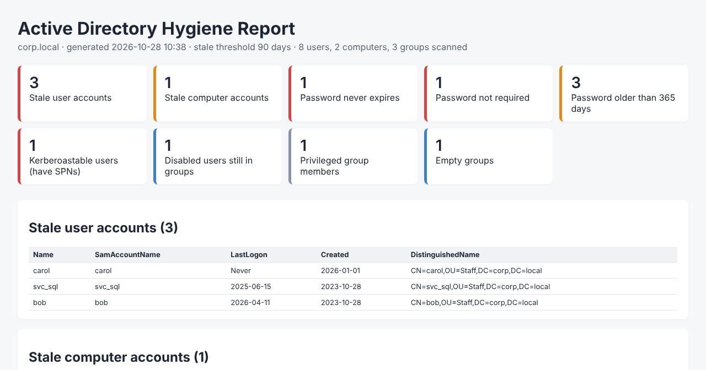

Find stale AD accounts with PowerShell
One command lists every enabled user and computer in Active Directory that hasn't logged on in 90 days (or any threshold you choose), skips new hires, and exports to CSV.
Quick start
# Download
Invoke-WebRequest https://raw.githubusercontent.com/benjaminbencsik/ad-stale-accounts/main/Find-StaleADAccounts.ps1 -OutFile Find-StaleADAccounts.ps1
Unblock-File .\Find-StaleADAccounts.ps1
# Users and computers inactive for 90+ days
.\Find-StaleADAccounts.ps1
# Users only, 180 days, one OU, export to CSV
.\Find-StaleADAccounts.ps1 -Days 180 -Type User -SearchBase 'OU=Staff,DC=corp,DC=local' -CsvPath .\stale-users.csv| Parameter | Default | What it does |
|---|---|---|
-Days | 90 | Inactivity threshold in days |
-Type | Both | User, Computer or Both |
-SearchBase | domain | Limit to one OU |
-Server | nearest DC | Target DC or domain |
-ExcludeSamAccountName | krbtgt, Guest… | Skip accounts; wildcards like svc_* allowed |
-CsvPath | none | Export results to CSV |
Why stale AD accounts are a security risk
Every enabled account is a door into your domain. When someone leaves and their account stays enabled, that door stays unlocked, and nobody is watching it. Attackers love stale accounts because:
- Nobody notices strange logons. The owner isn't around to report an unexpected MFA prompt or a password reset.
- Old passwords are often weak. Accounts that predate your current password policy are prime targets for password spraying.
- Group memberships pile up. A forgotten account may still sit in VPN, file-share or even admin groups.
- Auditors flag them. SOC 2, ISO 27001, PCI DSS and cyber-insurance questionnaires all ask how you handle inactive accounts.
Stale computer accounts matter too. They clutter reports and licence counts, and they hide which machines are actually managed and patched.
How to find inactive users and computers in Active Directory
The attribute that matters: lastLogonTimestamp
AD stores logon times in two places. lastLogon is exact but not replicated, so you'd have to query every domain controller and take the newest value. lastLogonTimestamp is replicated, but it only updates when the stored value is older than about 9–14 days. PowerShell exposes it as the friendly LastLogonDate property.
For finding accounts inactive for 30, 90 or 180 days, that ~14-day lag doesn't matter, and one fast query against one DC is enough. That's the approach the script uses.
The one-liner (and its traps)
Search-ADAccount -AccountInactive -TimeSpan 90.00:00:00 -UsersOnlyThis works, but on its own it:
- includes disabled accounts unless you add a filter,
- flags brand-new accounts that haven't logged on yet (your Monday new hires),
- gives you no easy exclusion list for service and break-glass accounts.
What Find-StaleADAccounts does instead
An account is reported only when it is enabled, its LastLogonDate is older than the threshold (or it has never logged on), and it was created before the threshold. The core logic is:
$cutoff = (Get-Date).AddDays(-$Days)
Get-ADUser -Filter 'Enabled -eq $true' -Properties LastLogonDate, whenCreated |
Where-Object { $_.whenCreated -lt $cutoff -and
($null -eq $_.LastLogonDate -or $_.LastLogonDate -lt $cutoff) }The script adds computers, exclusions, OU scoping, days-inactive and CSV export on top of that.
Safely cleaning up stale accounts
- Review the list. Look for service accounts, shared mailboxes, and hybrid users who only sign in to Microsoft 365 (on-prem AD never sees those sign-ins). Add them to
-ExcludeSamAccountName. - Disable, don't delete. Disabling is instantly reversible. Deleting loses the SID, group memberships and attributes (unless you have the AD Recycle Bin, and even then it's slower to undo).
- Tag and quarantine. Stamp the description with the date and reason, and move the account to a Disabled OU so it's obvious what happened.
- Wait 30–90 days, then delete what nobody asked about.
- Repeat monthly as a scheduled task.
Steps 3–5 are exactly what the AD Hygiene Toolkit automates, with full -WhatIf support and one-command undo.
FAQ
How do I find users who haven't logged in for 90 days?
Run .\Find-StaleADAccounts.ps1 -Type User -Days 90. It lists enabled users whose last logon is older than 90 days or who never logged on, and skips accounts created in the last 90 days.
How do I find inactive computer accounts in AD?
Run .\Find-StaleADAccounts.ps1 -Type Computer. Domain computers change their machine password every 30 days by default, so one that hasn't logged on in 90+ days is almost always decommissioned.
Is lastLogonTimestamp accurate?
It can lag the true last logon by up to about 14 days. That's fine for thresholds of 30 days or more. If you need exact times, query lastLogon on every DC.
Does the script change anything in Active Directory?
No. It's read-only and never disables, moves or deletes anything.
Should I delete stale AD accounts?
Disable them first and move them to a quarantine OU for 30–90 days. If nothing breaks and nobody asks, delete them then.
What permissions do I need?
Any authenticated domain user can read these attributes. You need the RSAT ActiveDirectory module: Add-WindowsCapability -Online -Name Rsat.ActiveDirectory.DS-LDS.Tools~~~~0.0.1.0.
AD Hygiene Toolkit: the full audit and cleanup
Go from "here's a list" to "here's an audit-ready report, and it's cleaned up".

- Audit-ready HTML report plus a CSV for every finding
- 9 checks: stale users and computers, password never expires, password not required, old passwords, Kerberoastable SPN accounts, privileged group members (recursive), disabled users still in groups, empty groups
- Safe cleanup: disable, stamp and quarantine stale accounts with
-WhatIf/-Confirm - One-command undo from a full action log
- Free updates · MSP-friendly license · plain PowerShell you can read